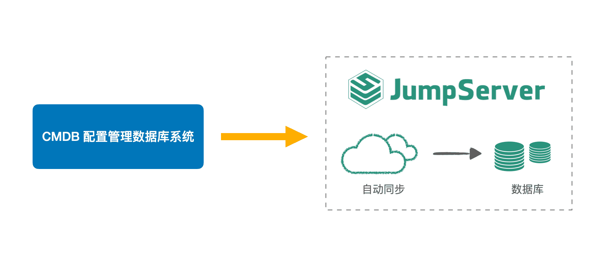
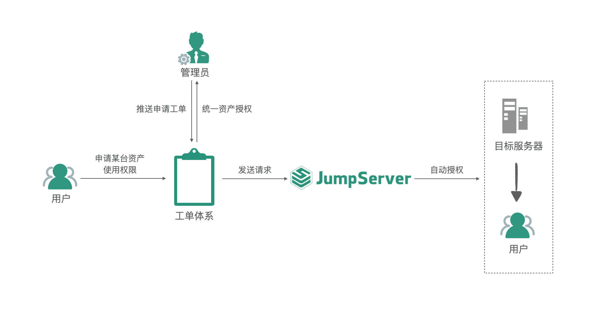

金山办公（KINGSOFT OFFICE）是中国办公软件的领航者，其产品体系以旗舰产品WPS Office为核心，辅以金山文档、金山协作及金山词霸等产品，形成了全方位、高效能的办公生态系统，在中国乃至全球范围内拥有庞大的用户基础。
作为一家办公软件和服务提供商，金山办公严格把控数据安全与隐私保护，在确保提升工作效率的同时，积极构筑数据安全屏障。其内部的云协作平台、KSOP（Kingsoft Operations）等部门早已前瞻性地引入了JumpServer开源堡垒机社区版这一领先的运维安全审计解决方案，将其作为公司运维安全架构的基石，构建起全方位、多层次的安全防护体系。这一举措不仅极大提升了公司内部办公环境的安全性，也为公司在保障客户数据安全性方面赢得了广泛赞誉。
新目标：构建稳固安全的研发和运维环境
在构建公司研发安全管控体系的征途上，金山办公力求在强化安全防护与提升工作效率之间找到完美的契合点，以保障运维流程的顺畅无阻。金山办公的IT运维团队秉持着“研发数据安全为基，效率提升并行不悖”的核心理念，创新性地提出并遵循“场景定制化、数据驱动化、流程规范化”的高级策略。
在这一背景下，随着公司研发运维安全架构的不断深化与完善，金山办公的运维团队对堡垒机系统的性能、执行效率以及实际应用的便捷性提出了更高的要求，并且希望基于JumpServer堡垒机打造出一套高效且安全的研发安全管理框架。
1. 通过RDP客户端连接Windows云桌面，获得更优质的使用体验
JumpServer社区版通过其创新性的纯浏览器Web Terminal接入方式，极大地简化了资产连接的流程，不仅让用户的操作更便捷，同时也显著降低了系统的维护成本。然而，在面向特定需求场景——例如金山办公的研发团队在使用远程Windows研发云桌面进行高效协作与深入开发时，研发团队对于视觉画面的清晰度和操作体验提出了更高的要求。
当前JumpServer社区版所提供的Web Terminal技术，在连接Windows研发云桌面时，尽管具备基本的连接能力，但在满足这些高级需求方面尚显不足，难以充分支撑金山办公研发人员的远程开发工作；
2. 对接内部CMDB系统，提升资产管理效率
金山办公依托其先进的混合云技术架构，在金山云、阿里云及华为云等云平台上部署了庞大的资产体系。这一混合云架构虽赋予了公司高度的灵活性与可扩展性，却也带来了较为频繁的资产上线/下线的管理操作需求。
为了确保资产数据的精准无误及实时同步，金山办公当前采取的措施是定期安排人员登录内部CMDB（配置管理数据库）控制系统，手动统计新增与淘汰的机器详情，并在JumpServer社区版的资产管理列表中逐一进行更新操作。这种高度依赖人工的资产管理模式，不仅耗时费力，难以保证时效性和准确性，同时也降低了整体的运维效率，因此金山办公的运维团队需要找到更加高效的资产管理方式；
3. 对接内部工单体系，提升协同能力
金山办公内部建立了一套成熟且完善的工单管理系统，旨在高效响应用户对服务器资源的申请与配置需求。然而，在当前的操作流程中，当用户通过内部工单体系提出服务器资源使用申请时，这一请求往往需要经过堡垒机管理员的人工介入，以手动方式完成授权分配的工作。这种模式虽然在一定程度上确保了流程的严谨性，但也不可避免地存在着实时性不足、授权准确性受限于人为因素，以及人力成本高昂等问题。
随着公司业务规模的不断扩大与资产使用需求的日益增长，这种传统的手动授权模式已经难以满足公司的日常需求，需要找到更加高效、精准和自动化的资产管理方案。
建设：基于JumpServer企业版的实践
面对上述新出现的需求，金山办公选择将JumpServer堡垒机从社区版升级至企业版。同时，通过深度集成JumpServer企业版的全方位功能，为研发安全管理体系的构建奠定了基础。
JumpServer企业版所包含的X-Pack增强包不仅了提供了强大的安全访问控制、精细化的权限管理以及详尽的审计追踪功能，还融入了智能化运维工具与自动化流程，极大地增强了金山办公IT运维团队在管理上的灵活性、安全性和规范性。这一集成方案使得运维人员能够迅速响应各种安全威胁与运维需求，以更高效和精准的方式处理运维相关事务，同时确保所有操作都符合既定的安全规范与流程标准。
借助JumpServer企业版，金山办公的IT运维团队显著提升了运维管理的效能，为公司的研发创新与安全运营提供了强有力的支撑。金山办公基于JumpServer企业版实现的关键性改进包括：
■ 构建统一的运维开发入口
JumpServer企业版支持直接调用本地RDP客户端（MSTSC，即微软远程桌面连接），后者专门为高效连接与管理Windows类型资产而设计。这一特性确保了研发人员在接入Windows研发云桌面时，能够无缝利用本地RDP客户端的强大能力，不仅让远程桌面会话的画面质量达到近乎本地操作的清晰度，还避免了传统Web Terminal可能会遇到的快捷键冲突问题，有效提升远程操作的流畅度与用户体验。
金山办公将日常研发工作中不可或缺的研发云桌面全面纳入到JumpServer的统一管理体系中，并且充分利用RDP客户端的连接优势，让研发人员能够直接通过熟悉的RDP界面访问云桌面，开展各类研发活动。相较于Web Terminal方式，RDP客户端连接方式不仅提供了更为清晰、流畅的视觉与操作体验，契合研发人员原有的操作习惯，同时也确保了研发团队的远程操作都受到了严格的安全审计与监控；
■ 多云资产自动同步
JumpServer企业版拥有完善的API接口体系，具备了高度的集成化与自动化能力。通过精心设计的API接口，JumpServer堡垒机能够与CMDB系统实现无缝联动，这一创新机制极大地简化了资产管理流程。具体来说，JumpServer能够自动探测并识别CMDB中新增或变更的资产信息，实现资产的自动发现与录入，提高了资产管理的时效性和准确性。
一旦资产信息成功同步至JumpServer平台，运维人员即可在该平台上灵活设置详尽的授权规则，确保每个用户仅能访问其被授权范围内的资产。用户在获得对应的授权后，便可通过JumpServer对同步的资产执行高效的运维操作，整个操作流程流畅、安全且易于管理，为企业的IT运维工作带来了充分的便利性。这种精细化的权限控制机制，不仅保障了企业资源的安全性，还大幅提升了团队协作的效率；

▲图1 金山办公JumpServer多云资产自动同步■ 统一工单体系，规范资产申请流程
金山办公内部已经构建起了一套高效且成熟的工单管理体系，鉴于其完善性与适用性，公司决定关闭JumpServer原有的工单管理模块，转而通过深度对接JumpServer的API接口，无缝集成内部流程工单系统。这一举措不仅实现了从资产申请、审批到授权的全链路自动化流程，显著提升了内部工作效率，同时还巧妙地保留了员工长期形成的使用习惯，有效降低了跨部门协作过程中的沟通成本与时间损耗。
同时，这一策略也将堡垒机系统深度融入到公司整体运维管理体系中，不仅增强了系统的安全性与合规性，还显著提升了运维团队的整体协同效率与管理水平。当用户遇到没有资产使用权限的情况时，用户可以便捷地通过内部工单系统提交资产使用申请，流程透明高效，管理员在接收到申请后，可以直接在统一的工单管理界面上审查并修改申请详情，确保信息的准确无误。
一旦申请审批通过，系统将立即自动授予用户相应的资产使用权限，实现了权限分配的即时性与准确性。同时，系统还具备权限到期自动回收机制，彻底免除了管理员手动回收权限的繁琐操作，确保了系统资源的高效循环利用与管理的规范性。

▲图2 金山办公JumpServer工单管理体系收益：JumpServer带来的业务价值
JumpServer堡垒机企业版为金山办公带来了多方面的业务价值：
■ 提升运维效率和用户体验
JumpServer实现了对Windows资产、Linux服务器及网络安全设备等多元化主机资产的集中管理，同时也高效对接金山办公内部的CMDB系统，实现了资产信息的自动化同步与实时更新，极大地简化了运维管理流程，减少了人工干预，显著提升了运维团队的工作效率与业务响应速度。
在研发与运维场景中，JumpServer支持通过云桌面环境进行操作，特别是当用户采用RDP客户端连接方式时，用户体验得到了质的飞跃。RDP客户端连接方式以其低延迟、高画质的特点，确保了远程操作过程的流畅性与清晰度，无论是复杂的系统配置调整还是精细的代码编写，都能实现如同本地操作般的顺畅体验。这一特性不仅大幅提升了运维人员的故障排查与解决效率，更为研发人员创造了一个高效、稳定的开发环境，有效助力产品迭代与技术创新；
■ 优化协同流程，实现工单高效流转
JumpServer的扩展能力体现在其灵活的API接口体系上。通过深度集成JumpServer的API接口，金山办公能够无缝地将资产申请与授权流程与内部工单管理体系紧密相连，构建起一个高效、自动化的工作流程。这一举措不仅保留了员工在工单申请与处理方面的原有习惯，还极大地简化了资产授权的复杂流程，实现了从工单提交到资产授权的全链路自动化。
具体而言，当员工通过内部工单系统提交资产访问请求时，系统能够自动触发JumpServer的API接口，将请求信息传递给JumpServer进行自动化处理。JumpServer根据预设的授权策略与工单内容进行匹配，快速完成资产的自动化授权，并将授权结果反馈回工单系统，形成闭环管理。该过程无需人工干预，大大提高了授权效率，减少了人为错误，确保了资产访问的安全性与合规性。
此外，JumpServer还允许金山办公根据实际需求自定义工单授权策略，灵活适应不同的业务场景与管理要求；
■ 满足未来发展规划
JumpServer正在融入金山办公的数字化转型进程中。在深度使用JumpServer的过程中，从社区版到企业版，再到不断迭代更新的新版本，JumpServer持续为金山办公带来更加便捷、安全且高效的操作体验。持续的版本迭代不仅丰富了堡垒机的功能性，还有效提升了系统的整体安全性与稳定性，确保了金山办公资产管理的无忧运行。